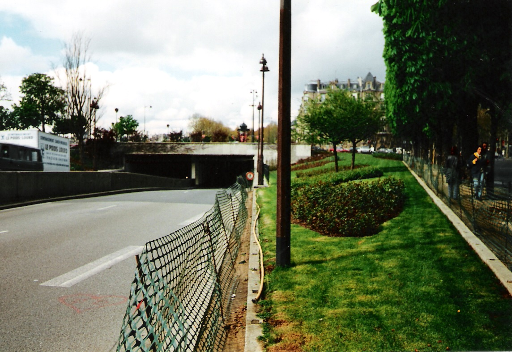

Follow the tools, procedures, and evidence used to detect impaired driving.
Module Content
Lesson sequence
Retained lesson content from the original Forensics module.
1
Reading
Forensic Detection of Impaired Driving
In this module you will learn about:
alcohol and its effects upon the human body
the Breathalyzer
the Intoxilyxer and consequences of impaired driving
crime case studies involving impaired driving
This module has 2 assignments (content, case study) and 1 quiz.
2
Reading
Forensic Detection of Impaired Driving
Module 4 Overview Forensic Detection of Impaired Driving
The burned interior of a vehicle that was hit by an impaired driver in January 2000. The 18-year-old driver, Christopher Oseguera, died after being unable to escape from the burning wreckage.
In Canada, impaired driving is one of the leading causes of criminal death and injury. As a result, law enforcement agencies use various scientific techniques to apprehend and process suspected impaired drivers. In this unit, you will learn about how the powerful drug alcohol affects the human body, the science behind forensic blood alcohol testing devices, some of the legal matters related to an impaired driving arrest, and the impact impaired driving collisions can have upon the lives of many.
Lesson 1 of this module examines the nature of alcohol and the powerful physiological effects it has upon the human body.
Lesson 2 discusses the types of scientific apparatus that have been developed to determine blood alcohol levels.
Lesson 3 focuses upon the consequences of being arrested for and convicted of impaired driving.
Lesson 4 examines the details of several impaired driving cases from history.
"It takes over 8,000 bolts to assemble an automobile,
and one nut to scatter it all over the road."
~ Author unknown
By the end of Module 4, you should be able to
outline how alcohol can physiologically affect an individual
understand how the process of Breathalyzer analysis testing is performed by police officers
understand how the process of Intoxilyzer analysis testing is performed by police officers
In 2013 in Canada, 1081 individuals were killed in motor vehicle collisions caused by impaired driving.
3
Reading
Lesson 1 Alcohol and its Effects Upon the Body
4
Reading
Scientifc Description of Alcohol
Scientific Description of Alcohol
Alcohols are a group of chemical compounds that include methanol, ethanol, and isopropanol. The alcohol in alcoholic beverages fit for human consumption is ethyl alcohol or ethanol. Following is the molecular structure of ethanol:
In this diagram, C is carbon, H is hydrogen, and O is oxygen while the lines represent chemical bonds. The OH group in the ethanol molecule is called a hydroxyl group, and it is responsible for the specific chemical properties of alcohol.
Alcohol is created during an organic process called fermentation. Fermentation is the process that some organisms use to break down carbohydrates (starch, sugars) for energy to survive. The main by-products of fermentation are alcohol and carbon dioxide. The only organisms that produce ethanol by fermenting carbohydrates are micro-organisms such as yeast (a type of fungus) and bacteria.
To produce an alcoholic beverage, yeast is added to an organic pulp liquid mixture that contains simple sugars (fruits) or complex carbohydrates (grains). The yeast ferments the carbohydrate in a very rapid aerobic process. After the primary rapid fermentation slows, the liquid is placed into a container with an air lock that prevents any air from getting in. This forces the yeast to begin anerobic fermentation that is much slower than aerobic fermentation but produces compounds that enhance the flavour as well as producing more alcohol. Champagne and home made beer are bottled before fermentation is complete, the carbon dioxide gas produced dissolves in the beverage and produces the bubbles that appear when the bottle is opened. High alcohol beverages are made by distillation after the fermentation process (for example, rum, vodka, and whiskey).
Table A: Beverages made from Various Types of Organic Pulp
Organic Pulp being Fermented
Type of Beverage Produced
Red or White Grapes
Wine
White Grapes (bottled before fermentation is complete)
Champagne
Barley
Beer
Corn, Barley, Potato, Rye, Wheat
Vodka
Sugar Cane
Rum
Pure 100% alcohol is deadly because only a few ounces will raise the blood alcohol level to a point at which the brain shuts down the body's involuntary functions (that is, heart rate and respiration) resulting in death. The alcohol concentration by volume (or proof) varies among the types of alcoholic beverages (see table B).
Table B: Alcohol Concentration in Various Types of Beverages
Type of Beverage
Alcohol Concentration (Range)
Alcohol Concentration (Store-bought Average)
Beer
4-6%
5%
Wine
7-15%
11%
Champagne
8-14%
12%
Distilled Spirits
40-95%
40%
A person who has had 100 mL of a distilled spirit such as vodka has about four times more alcohol in his or her body than a person who has consumed 100 mL of wine. Thus, one can of beer (355 mL), one small glass of wine (175 mL), and two shots of a distilled spirit (50 mL) all have approximately the same amount of alcohol. This standardized amount is considered "one drink".
Beer = 355 mL x 0.05 = 17.75 mL of alcohol
Wine = 175 mL x 0.11 = 19.25 mL of alcohol
Distilled spirits = 50 mL x 0.40 = 20 mL of alcohol
5
Reading
The Breakdown of Alcohol by the Body
The Breakdown of Alcohol by the Body
When alcohol is being absorbed, it enters the bloodstream and dissolves in the blood plasma. As the blood travels through the body, the alcohol moves into the tissues of the body in a process called diffusion. Alcohol diffuses into every tissue of the body except fat tissue because alcohol cannot dissolve in fat. Once inside the tissues, alcohol exerts its effects upon the body.
The human body considers alcohol to be a poison; therefore, the body breaks the alcohol down entirely within the kidneys, the lungs, and the liver. The kidney eliminates 5% of alcohol into the urine. The exhalation from the lungs--about 5% of the alcohol--is detected by blood alcohol testing devices. The remaining 90% of alcohol is broken down by the liver. Two dehydrogenase enzymes in the liver strip electrons from alcohol to form acetic acid, CH3COOH, a key component of vinegar. When a person drinks more alcohol than the liver can eliminate, his or her blood alcohol concentration (BAC) increases.
Physiological Effects of Alcohol Upon the Brain
Alcohol is a powerful drug because it affects more than one area of the brain and it affects each area differently. Some parts (such as the cerebrum) are more sensitive than others (like the medulla oblongata). As the BAC increases, more areas of the brain are affected. The order in which alcohol affects the brain is as follows: cerebrum, cerebellum, hypothalamus and pituitary gland, medulla oblongata.
1. Cerebrum: The cerebrum is the largest part of the brain. As a result, it is the most complex part. The cerebrum processes information from the senses, controls the intellect and consciousness, and initiates voluntary muscle movements. Alcohol affects the cerebrum in the following ways, all of which become more pronounced as the person's BAC increases:
Depresses behavioral inhibitions: The person becomes more talkative, more self-confident, and less socially inhibited.
Slows down information processing from the senses:The person has trouble seeing, hearing, and the pain threshold is raised.
Inhibits thought processes: A person does not think clearly and does not use effective judgment.
2. Cerebellum: The cerebellum coordinates the movement of muscles and controls fine motor movements. For example, you can normally touch your finger to your nose in one smooth motion with your eyes closed. If your cerebellum were not functioning, this action would be extremely shaky or jerky. As alcohol affects the cerebellum, muscle movements become less coordinated. In addition to coordinating voluntary muscle movements, the cerebellum coordinates fine muscle movements involved with maintaining one's balance. When the cerebellum is affected by alcohol, the person will frequently lose their balance.
3. Hypothalamus and Pituitary Gland: The hypothalamus controls and influences hormones released through chemical and nerve impulse actions on the pituitary gland. Specifically, alcohol stops the hypothalamus and pituitary gland's secretion of the anti-diuretic hormone (ADH), which causes the kidney to reabsorb water. When ADH levels drop, the kidneys do not reabsorb as much water. Thus, the kidneys release more water into the urine causing the person to urinate more often.
Alcohol depresses nerves in the hypothalamus that control sexual arousal and performance. As BAC increases, sexual desire may increase, but a person's ability to perform sexually often declines. For example, male erections will be less sustained.
4. Medulla Oblongata: The medulla oblongata controls involuntary body functions such as respiration, heart rate, temperature, and consciousness. As alcohol influences the medulla oblongata, a person will begin to feel sleepy and may become unconscious as BAC increases. If the BAC gets high enough to influence breathing, heart rate, and temperature centers, a person will breathe slowly or stop breathing altogether, and both blood pressure and body temperature will fall. These conditions can be fatal.
Fun Fact! Alcohol's inhibition upon the anti-diuretic hormone (ADH) causes a person who drinks 1 litre of beer to urinate approximately 10 times more than a person drinking 1 litre of water.
The following video goes into more detail about what happens to your brain when you drink alcohol.
6
Reading
Behavioral Effects of Alcohol Consumption
Behavioural Effects of Alcohol Consumption
Blood alcohol concentration (BAC) refers to the concentration of alcohol detected in the blood. The BAC of an individual rises within 20 minutes after drinking alcohol. The legal limit in Canada is 80 mg%, which is the equivalent of 80 mg of alcohol in 100 mL of blood (0.08). When an individual is found to have more than 80 mg% of alcohol in their blood, he/she is considered to be legally impaired and can be arrested for impaired driving. Interestingly, however, a police officer can charge you with impaired driving regardless of your BAC.
Certain predictable behavioral changes occur when a person drinks alcohol. The body responds to alcohol in stages that correspond to an increase one's BAC:
Euphoria (BAC = 30 to 120mg%)
more self-confident
slow reaction time
poor judgment
shortening of attention span
flushed face
difficulty with fine movements
Excitement (BAC = 90 to 250mg%)
drowsiness
difficulties understanding or remembering
increasingly slower reaction time
poor coordination and loss of balance
blurred vision
Confusion (BAC = 180 to 300mg%)
confusion; dizziness and perhaps staggering; cannot see clearly
highly emotional--aggressive, withdrawn, or overly affectionate
slurred speech; uncoordinated movements; high pain tolerance
Stupor (BAC = 250 to 400mg%)
hardly move at all; cannot respond to stimuli; cannot stand or walk
vomiting; lapses in and out of consciousness
Coma (BAC = 350 to 500mg%)
unconscious; reflexes are depressed (for example, pupils do not respond).
breathing slow /shallow; lower than normal body temperature; heart rate may slow.
Death (BAC more than 500mg%)
death by alcohol poisoning
An Alberta Impaired Driving Tragedy
In November,1996, a married couple from Camrose, Alberta, were killed in a collision with an impaired driver. The couple left behind four children under the age of twelve. The impaired driver had been charged with impaired driving before; however, he did not lose his license and continued to drive. In court following killing the couple from Camrose, in a plea bargain he received a 3-year prison sentence and 10 years driving prohibition.
Shattered Lives and Broken Hearts
On October 24th, Joann Christou, 50, was killed by 21 year old Eric Lestar when he drove his car into the back of her vehicle. Lestar, after drinking 2-1/2 pints at a bar, sped through a yellow light at 97 Street and 160 Avenue during busy afternoon rush-hour traffic. His Infiniti G37 struck the back of Christou's Nissan, sending the Xterra rolling into a ditch. His car also ended up in the ditch. Christou's vehicle burst into flames. Bystanders and police tried to save her. One witness reported seeing her hit her head on the vehicle's steering wheel. Multiple people heard her screaming as the vehicle burned.
Investigators determined Lestar's vehicle was travelling between 116 and 129 km/h in the moments before the collision. The speed limit was 70 km/h. Lestar's blood alcohol level between 179 to 211 milligrams of alcohol/100 mL of blood - almost three times the legal limit. He was in "good spirits and laughing" as he received medical treatment at the scene. Lestar pleaded guilty to impaired driving causing death. He was sentenced to four years and 3 months in prison. He is also banned from driving for five years.
"Alcohol is the leading contributor to deaths on highways. Over 35,000 deaths involving a drinking driver occurred between 1977 and 1996, and the number injured may have been over 1,000,000. It has been estimated that a 50 mg% legal limit could reduce the total motor vehicle fatalities between 6% and 15%. "
- Dr. Robert Mann, Senior Scientist at Centre for Addiction and Mental Health
7
Reading
The Drunkometer
Alcohol in a Breath Sample
Alcohol does not chemically change when it is absorbed into the blood or while it is in the bloodstream. As the blood passes through the lungs, alcohol readily moves through the alveoliof the lungs and evaporates into the air. The concentration of the alcohol in the air of the alveoli is the same as the concentration of the alcohol in the blood. When a person breathes into an alcohol breath testing device, the alcohol from the alveoli is drawn into the device.
The concentration of alcohol in the breath is the same as the concentration of alcohol in the blood; therefore, the blood alcohol concentration (BAC) can be determined by having someone breathe into an alcohol breath testing device. The ratio of breath alcohol to blood alcohol is 2,100:1, meaning that 2,100 mL of air from the alveoli will contain the same amount of alcohol as 1 mL of blood.
The Drunkometer
The creation of alcohol breath testing devices for police officers resulted from a practical requirement. Taking a blood or a urine sample from an individual to test for alcohol consumption by police officers in the line of duty is time-consuming and difficult.
The inventor of the first successful breath analyzer device for determining blood alcohol concentration was a professor at Indiana State University, Dr. Rolla Neil Harger. In 1938, Dr. Harger developed the Drunkometer that could determine the amount of alcohol in an individual's blood from a breath sample. To use the Drunkometer, a person blew into a breath-test bag where any alcohol in this air sample would be converted into acetic acid. The acetic acid was then drawn into a solution where a chemical reaction occurred causing a change in colour. The more alcohol in the breath, the greater the colour change.
Dr. Harger helped persuade the Indiana state legislature to pass laws restricting alcohol use by drivers. After this occurred, alcohol-related traffic deaths decreased dramatically in Indiana and demand for his Drunkometer increased.
The main drawback to Dr. Harger's Drunkometer was that it required re-calibration every time it was moved. Therefore, it was not portable and was impractical for police officers.
Continuous heavy alcohol consumption can lead to cell death in the liver, brain cell destruction, high blood pressure, decreased sperm production, and loss of balance.
Continue to learn more about the breathalyzer...
8
Reading
Lesson 2 - The Breathalyzer
9
Reading
The Breathalyzer
The Breathalyzer
In the early 1950's, a student of Dr. R. Harger and Indiana state police officer, Robert Borkenstein, invented a portable alcohol breath testing device called the Breathalyzer. Instead of having to take a driver's blood or urine to test, the Breathalyzer allowed a police officer to test the driver's breath for alcohol on the spot to determine if the driver was impaired.
The Breathalyzer has been used widely by law enforcement agencies around the world for over fifty years. Despite its age, the breathalyzer has been modified very little since its invention because it is quick, reliable, and portable. New breath testing devices developed in the 1980's have begun to replace the Breathalyzer in many police departments; however, the Breathalyzer is still widely used as a 'back-up' breath testing instrument when difficulties with the newer devices occur. Some breath analysis technicians feel that the Breathalyzer is better than the new devices that are replacing it because the technician is more involved in the process.
The Chemical Reaction that Occurs in the Breathalyzer
If a person is suspected of having consumed alcohol, the suspect is required to blow into the mouthpiece of the Breathalyzer. The breath sample goes through an open glass test vial containing a solution of potassium dichromate, sulfuric acid, water, and silver nitrate. If alcohol is present in the breath sample, a chemical reaction occurs producing a colour change.
In a chemical reaction, the items combined are called the reactants. The reactants involved in the oxidation of alcohol are
2 K2Cr2O7
+ 8 H2SO4
+3 CH3CH2OH
+ H2O
+ AgNO3
potassium dichromate (orange colour)
sulfuric acid
ethanol (drinking alcohol)
water
silver nitrate
If alcohol is present in the breath sample, dichromate ions and hydrogen ions (from the sulfuric acid) react with the alcohol from the sample. The oxidation of alcohol occurs producing the following:
2 Cr2(SO4)3
+ 2 K2SO4
+3 CH3COOH
+ 11 H2O
+ AgNO3
chromium (III) sulfate (blue-green colour)
potassium sulfate
acetic acid
water
silver nitrate
This reaction is complete in approximately 90 seconds. Notice that the silver nitrate does not change during this reaction; it is a catalyst.
Continue to learn more about the breathalyzer...
10
Reading
Determining BAC
How the Breathalyzer Determines BAC
When alcohol is oxidized in the Breathalyzer, the reactant (potassium dichromate) breaks down to produce a colour change. Potassium dichromate is dark orange, but when it is broken down, it fades to a lighter orange. The greater the amount of alcohol present, the more potassium dichromate is broken down. Therefore, the dark orange solution present in the glass test vial becomes progressively lighter in color. The greater the amount of alcohol in the breath sample, the greater the change. In fact, increasingly larger amounts of alcohol cause the solution to progress from light orange, to clear, to blue-green due to the production of chromium (III) ions.
To quantify the amount of alcohol present in the sample, the test vial is compared to a control vial (a vial that has not been through a reaction) in a photocell system. A small light is positioned between the two vials while on either side of each vial a photocell measures the amount of light that passes through each vial.
Any difference in the amount of light that passes through the vials produces an electric current causing a gauge in the breathalyzer to move from its resting place. A knob must then be turned to bring the gauge back to rest. This determines the level of alcohol in the sample. The more the knob must be turned, the greater the level of alcohol.
Negative vs. Positive Test
The negative and positive indications of the presence of alcohol in a breath sample as shown by the Breathalyzer are as follows:
Negative test for the presence of alcohol
Solution in the test vial remains dark orange due to the presence of the dichromate ion. The guage of the Breathalyzier does not move.
Positive test for the presence of alcohol
The orange colour becomes lighter or may turn blue/green because of the decrease in dichromate ions and the production of chromium (III) ions. The guage of the Breathalyzer moves.
Continue to learn more about the breathalyzer...
11
Reading
Drawbacks to The Breathalyzer
An Alberta Impaired Driving Tragedy
East of Edmonton in August of 2003, a 32-year-old woman drove her SUV for almost an hour in the wrong lane on Highway 16. Her SUV then collided head-on with a car being driven by a 20-year-old girl who died instantly. An off-duty police officer who witnessed the collision saw the driver of the SUV stumbling around unharmed after the crash with glassy eyes and slurred speech.
In court, the driver of the SUV admitted to having six drinks of gin at her father's wedding that night, but despite this admission she pleaded guilty only to dangerous operation of a motor vehicle causing death. All impaired driving charges against her were thrown out because she had not been given adequate access to a lawyer.
Drawbacks to the Breathalyzer
Instead of receiving a sentence of ten or more years in jail for impaired driving causing death, the driver received only two years of house arrest, a five-year driving ban, and 240 hours of community service.
As is the case with any scientific instrument, the Breathalyzer is not perfect. For example,
If an individual who had no alcohol to drink, rinsed his or her mouth with mouthwash and blew into the Breathalyzer, a positive test may occur because many types of mouthwash contain alcohol. However, the BAC reading would be low.
The test vials used in the Breathalyzer contain sulfuric acid, which is a highly corrosive chemical compound. If sulfuric acid is spilled on an individual's skin, it will cause a severe chemical burn.
As was discussed earlier during a Breathalyzer test, two glass test vials are compared causing a gauge to move. To complete this part of the test, a knob is turned by an operator to bring the gauge back to rest, thus determining the amount of alcohol in the blood. Although each operator of a Breathalyzer has specialized training, human error may still occur.
These drawbacks led to the development of an automated alcohol breath testing device called the Intoxilyzer that you will learn about in the next lesson .
12
Reading
The Intoxilyzer & Consequences of Impaired Driving
13
Reading
The Intoxilyzer
The Intoxilyzer
In the early 1980's, an American company developed the Intoxilyzer, which uses infrared technology to test breath samples for alcohol. The Intoxilyzer is an automated instrument that uses infrared spectroscopy to identify molecules based on how they absorb infrared light. The Intoxilyzer was developed to lower the chances of operator error and to eliminate the need for chemical compounds.
Molecules are constantly moving, and exposure to infrared light causes a change in this movement. The chemical bonds within a molecule absorb infrared light at different wavelengths. This causes the bonds to bend or stretch.
To determine if alcohol is in a sample, both the wavelengths of the chemical bonds in alcohol and the absorption of infrared light are measured. Measurement of the bonds and wavelengths helps to identify the alcohol molecule while the amount of infrared light absorbed determines the quantity of alcohol.
Alcohol is water soluble and women have more fat and less water in their bodies than men. Therefore, a woman will have a higher blood alcohol concentration than a man with the same body weight and drinking the exact same amount of alcohol.
Inside the Intoxilyzer
Major Components of the Intoxilyzer
A: Infrared light source
E: Lens
B: Breath input
F: Filter wheel
C: Breath output
G: Photocell system
D: Sample chamber
H: Microprocessor
The Intoxilyzer Testing Procedure
A suspect blows into the mouthpiece of the Intoxilyzer. The breath sample passes into the simulator (shown above) before it enters the sample chamber (D) of the Intoxilyzer. This device ensures that there is an adequate breath sample given and that the temperature of the breath sample is 34oC.
Infrared light (A) passes through the sample chamber and is focused by a lens (E) onto a spinning filter wheel (F).
As infrared light passes through the chamber, it interacts with the alcohol in the breath sample. This causes a decrease in light intensity.
The spinning filter wheel contains narrow slits created for each of the wavelengths of the bonds in alcohol. The light passing through each filter is detected by a photocell system (G), and it is converted to an electrical pulse.
The electrical pulses are relayed to a microprocessor (H) that interprets them and prints the BAC calculation onto a digital screen.
If the temperature of a breath sample from an impaired driving suspect drops below 34oC to 33oC, the Intoxilyzer reading can go down by as much as 7%.
"I made a commitment to completely cut out drinking alcohol... and the floodgates of goodness have opened up to me, spiritually and financially."
- Denzel Washington (Popular American Actor)
14
Reading
Operation of BAC Testing Devices
The Future of Alcohol Testing
Saliva alcohol testing is currently being reviewed as a BAC testing method. Alcohol is absorbed into the bloodstream and can be detected in the mouth, throat, stomach, and intestines.
Saliva is a fluid secreted into the mouth and throat by the salivary glands located in the upper throat. Saliva helps dissolve food allowing it to be absorbed by the taste buds in the tongue and throat. Saliva moistens food that has been chewed, making travel down the esophagus to the stomach easier. Lastly, saliva contains an enzyme that chemically breaks down sucrose into glucose and fructose.
There are two different saliva alcohol test methods available. In one method, a pre-treated swab is wiped inside the mouth and a colour change indicates the presence of alcohol. The darker the colour of the swab, the higher the alcohol content in the blood. In another type of testing method, a strip pad is placed on the tongue and the resulting colour is compared to a chart that shows different levels of alcohol concentration.
Operation of BAC Testing Devices
Within law enforcement agencies, operators of alcohol breath testing instruments are experienced police officers. All operators of any type of breath alcohol testing device must be trained in the use and calibration of the device because the results may be used as evidence in court.
Most police officers carry portable roadside alcohol breath testing devices that operate on the same principles as full-size alcohol breath testing instruments such as a Breathalyzer or an Intoxilyzer. These portable alcohol breath testing devices are used by police officers to conduct roadside tests upon drivers they suspect have been consuming alcohol. If people fail to pass a test on one of these roadside alcohol breath testing devices, they are arrested, have their rights read to them, and are taken to a police station.
After suspects are processed at the police station, they are subjected to another alcohol breath test using a full-size instrument (Breathalyzer or Intoxilyzer). The results from both the roadside breath testing device and the full-size breath testing instruments are important pieces of evidence needed to prosecute successfully someone accused of impaired operation of a motor vehicle.
In Alberta,
if a person fails the roadside alcohol breath test (>80mg%) and fails the Breathalyzer or Intoxilyzer test (>80mg%), he or she will be charged with impaired driving
if a person fails the roadside alcohol breath test (>80mg%) but passes the Breathalyzer or Intoxilyzer test with a reading between 50mg% and 80mg%, a 24-hour license suspension is given
if a person fails the roadside alcohol breath test (>80mg%) but passes the Breathalyzer or Intoxilyzer test with a reading below 50mg%, he or she is released but discouraged from driving home.
Police officers recite the following to an individual who has been arrested:
"You have a constitutional right to a reasonable opportunity to contact a lawyer. During this time, we cannot take a statement from you or ask you to participate in any process that might provide evidence against you. You may receive free and immediate preliminary legal advice at any time during our investigation by calling the toll-free number provided by the Legal Aid Society or legal advice from any other lawyer you wish. Do you wish to waive your right to receive free and immediate preliminary legal advice, or legal advice from any lawyer you wish?"
Watch the following video to see the use of BAC testing devices in action.
15
Reading
Refusal to Provide a Breath Sample
Refusal to Provide a Breath Sample
"In accordance with the provisions of the Criminal Code, I demand that you provide such samples of your breath as are necessary in the opinion of a qualified technician to enable a proper analysis to be made in order to determine the concentration, if any, of alcohol in your blood and that you accompany me for that purpose. You will be charged under the provisions of the Criminal Code if you do not comply. Will you comply with this demand?"
These are the words a police officers recites to an individual who is suspected of impaired driving. A police officer can ask for a sample of breath from a motorist as long as the officer has a 'reasonable suspicion' that the motorist has consumed alcohol prior to driving. Driving a motor vehicle is viewed as a privilege and not a right; therefore, licensed motorists are legally required to provide breath or blood samples to police officers.
In Canada, a person is required by law to provide two suitable breath samples based upon the opinion of the technician. If a suspect refuses, the suspect is charged with "refusing to provide a breath sample", an offense that carries the same penalties as the offense of impaired driving. This applies to a roadside demand as well as an in-station demand. Therefore, refusing to provide a breath sample only complicates the legal problems a person creates by choosing to drink and drive.
Legal and Personal Consequences of Impaired Driving
An impaired driving conviction can carry with it severe legal penalties:
If a person is found guilty of impaired driving, most likely his or her driver's license will be suspended for a specified amount of time--from 30 days to a lifetime driving ban.
A fine is often imposed, ranging from $100 to $150 000.
In some cases imprisonment is given:
no injuries = 30 days to 2 years
injuries or death = house arrest or jail time of up to 15 years
Other legal consequences include probation, community service hours, and/or substance abuse counselling.
The personal consequences of being convicted of impaired driving can also be severe:
The loss of driving privileges for even a short period of time could lead to the loss of one's job--especially if one must operate a motor vehicle at work.
The expensive legal bills and license reinstatement fees can cause financial difficulties because they often exceed $5 000.
The impaired driver may also be sued for damages totaling hundreds of thousands of dollars in the event of property damage (collision) and/or personal injury.
Automobile i nsurance costs more for someone with an impaired driving conviction. Some insurance companies may refuse to insure an individual who has been convicted of impaired driving.
An Alberta Impaired Driving Tragedy
In March of 1999 while driving to the Calgary Zoo, a 22-year-old woman and her 4-year-old son were hit head-on by a vehicle being driven by an impaired driver. The 4-year-old boy was killed instantly and his mother died a few hours later.
The impaired driver was a young student who was charged and convicted of two counts of criminal negligence causing death. He served two years of house arrest, completed 240 hours of community service, and his driver's license was revoked for 5 years. During his two years of house arrest, he was allowed to complete his education.
In 2010, approximately 63,821 Canadians were injured in impaired driving crashes (175 per day).
The cost of impaired driving motor vehicle crashes in Canada has been estimated to be over 20 billion dollars per year.
Although the number of impaired driving accidents in Canada has decreased in recent years, numerous people are killed each year by impaired drivers despite the best efforts by law enforcement, the media, and well-organized groups such as Mothers Against Drunk Driving (MADD). The forensic detection of alcohol impairment is the central tool that helps police officers remove from the roads those who choose to drink alcohol and drive motor vehicles.
The following lesson focuses upon two impaired driving case studies based on actual events:
The Drunk Russian Diploma - a nationally publicized case that occurred in Canada.
On an afternoon in January, 2001, a lawyer named Catherine MacLean and her friend Catherine Doré were walking their dogs in a residential neighbourhood in Ottawa when a vehicle veered off the road and ran into both of them. The driver of the vehicle was Andrei Knyazev, a senior diplomat working at the Russian Embassy in Ottawa. Mr. Knyazev was returning home from an ice fishing party.
Catherine MacLean and her dog were killed immediately while Catherine Doré received serious injuries in the accident. Police officers at the scene reported that Knyazev appeared heavily drunk; however, he refused to take a roadside alcohol breath test and claimed his right to diplomatic immunity. Despite this, Mr. Knyazev was arrested at the scene and charged with five counts, including criminal negligence and impaired driving. However, to avoid being prosecuted under Canadian law, Mr. Knyazev hurriedly fled Canada the next day for Moscow.
The Russian government refused a Canadian government request that Knyazev be stripped of his diplomatic immunity to be tried in Canada. In Moscow, Andrei Knyazev was dismissed from the Russian diplomatic foreign service and charged with careless driving resulting in death under the Russian Criminal Code.
In March of 2002 at his trial, Andrei Knyazev denied that he drank alcohol on the day he hit the two innocent women. However, several of Knyazev's former colleagues testified that he had consumed whiskey at the ice-fishing party and smelled of alcohol several hours after the accident occurred.
Andrei Knyazev taking a break during his trial.
At the trial it was revealed that Knyazev had been involved in three traffic collisions in two years while he was in Canada, not including the fatal 2001 crash. In two of the three collisions, he was legally intoxicated as his blood alcohol concentration was over 80 mg%. However with assistance from Canadian Government officials, he escaped impaired driving charges because of his diplomatic status.
At the end of the trial, the judge found Knyazev guilty of careless driving resulting in death. He received a four-year prison sentence at a low security facility and a loss of driving privileges for three years after his release. After his sentence, Knyazev's lawyer indicated he would appeal for a lighter sentence based on the absence of BAC tests in the case. Again, there were no BAC test results in this case because Knyazev had refused to take any tests claiming his right to diplomatic immunity. If Knyazev was tried in Canada, he would have faced up to 20 years in prison. However, the likelihood of this is doubtful because maximum sentences are rarely handed out by judges in Canada.
Sadly, this tragic incident did not seem to deter foreign diplomats from choosing to drive after consuming alcohol. This is particularly alarming considering the fact that all foreign embassies employ chauffeurs and most diplomats have drivers available to transport them. They have no need to drive, and certainly no reason to drink and drive.
In Ottawa in 2005, three foreign diplomats were charged with impaired driving. All three diplomats claimed their right to diplomatic immunity after being charged with impaired driving. However, each of these requests for immunity were denied so all three diplomats opted to avoid prosecution by turning over their driving licenses to the Department of Canadian Foreign Affairs. Under Canada's zero-tolerance policy on impaired driving by diplomats, if a diplomat turns in his/her driver's license then any charges laid are eventually withdrawn. The names of the three diplomats and the countries from which they come from will not be released due to a police, Foreign Affairs Department, and Crown attorney policy to withhold the identities of foreign representatives who opt to remain immune under the impaired driving policy.
"Of all vices, drinking is the most incompatible with greatness."
- Sir Walter Scott (Scottish novelist and poet)
18
Reading
The Death of Princess Diana
Crime Case Study #2: The Death of Princess Diana
Princess Diana, 1961-1997
Princess Diana was the world's most famous victim of impaired driving. Learning more about this tragic motor vehicle crash could help deter people from driving motor vehicles while impaired.
Brief Background
Lady Diana Spencer was born into an aristocratic British family in 1961. At 18, she began dating Prince Charles, thirteen years older than herself and heir to the British throne. On July 29, 1981, after a two-year courtship, Charles and Diana wed and within 4 years they had two sons together - William and Harry. However, the marriage of Charles and Diana fell apart, and the royal couple divorced in 1996.
In 1997, Diana began a romance with Dodi Al-Fayed, the wealthy son of the owner of Harrod's department store in London and the Ritz Hotel in Paris.
Events Leading to the Crash
On August 31st, 1997, Princess Diana and Dodi Al-Fayed were in Paris, France, for the weekend. Late in the afternoon, they arrived at the Ritz Hotel where ten to twenty photographers were waiting for them. The couple left the hotel at 7 p.m. and were driven to Dodi's apartment where again they were swarmed by photographers. The couple intended to go for a late supper at a posh restaurant, but they changed their plans because they were running late and they were being pursued by photographers. Diana and Dodi decided to eat at the Ritz Hotel and then to go back to their apartment.
Interestingly, at some point at the Ritz Hotel that day, Dodi Al-Fayed had a $265 000 diamond ring delivered to him. Some suggest that this was an engagement ring he planned to give to Diana that weekend.
Description of the Crash
Shortly after midnight, Diana and Dodi left the hotel to return to their apartment. To evade photographers, the car they arrived in left the front of the hotel without them as a decoy and the couple left the rear of the hotel in a different car with a different driver. The driver was the assistant security director at the Ritz Hotel, Henri Paul, who was actually off duty but was called in to drive them home. In addition, Diana's bodyguard, Trevor Rees-Jones, accompanied them; he sat with his seatbelt on in the front. Only the bodyguard was wearing his seatbelt.
The ploy to evade photographers worked for a short while, but about ten photographers on motorcycles discovered the truth of the plan and began pursuing them. When Diana's car entered a four-lane underground roadway at high speed, it swerved left across two westbound traffic lanes and hit one of the central pillars in the tunnel. The whole front end of the car crumpled and the front part of the roof was crushed. Witnesses said that the car entered the tunnel going well over 100 km/hr. The speed limit in the tunnel is 50 km/hr.

Pont de l'Alma tunnel in Paris, the location of the crash investigation. Source: Wikimedia Commons.
The Aftermath
The crash killed driver Henri Paul and Dodi Al-Fayed immediately. Diana's bodyguard life was saved by the seatbelt and the car's airbag. However, he did receive serious injuries to his lower face and his chest. Rescue crews took over an hour to extract the unconscious Diana from the wreckage. She was bleeding profusely and had massive chest injuries. At the hospital Diana had a cardiac arrest and, despite two hours of massaging her heart in the hopes of reviving her, she died.
Crash Analysis
The cause of the wreck that killed Princess Diana and Dodi Al-Fayed was the impaired state of the driver Henri Paul. After the crash, the prosecutor's office in Paris released an official statement revealing that multiple tests of blood, hair, and tissue samples from Henri Paul indicated he had a blood alcohol concentration (BAC) of 175 mg per 100 ml (175mg%). A second test conducted by an independent laboratory reported a BAC reading of 187 mg per 100 ml (187 mg%).
France has two legal limits related to impaired driving. A BAC greater than 50 mg% is a misdemeanor, which results in a fine or a temporary driving suspension. A BAC greater than 80 mg% is a criminal matter, which results in an impaired driving charge. The tests not only indicated Henri Paul's BAC was three times over the legal limit at the time of the accident; they also indicated a high amount of various prescription drugs. The high levels of alcohol in Henri Paul's body severely impaired his ability to drive a car.
After viewing Henri Paul's BAC results, Dr. Robert Forrest, a leading forensic toxicologist in England stated, "If I knew that I was going to be driven by someone in that condition, I would not get into the car with them. No way."


.jpg)


 In the early 1980's, an American company developed the Intoxilyzer, which uses infrared technology to test breath samples for alcohol. The Intoxilyzer is an automated instrument that uses infrared spectroscopy to identify molecules based on how they absorb infrared light. The Intoxilyzer was developed to lower the chances of operator error and to eliminate the need for chemical compounds.
In the early 1980's, an American company developed the Intoxilyzer, which uses infrared technology to test breath samples for alcohol. The Intoxilyzer is an automated instrument that uses infrared spectroscopy to identify molecules based on how they absorb infrared light. The Intoxilyzer was developed to lower the chances of operator error and to eliminate the need for chemical compounds.

 A suspect blows into the mouthpiece of the Intoxilyzer.
A suspect blows into the mouthpiece of the Intoxilyzer. 
 An impaired driving conviction can carry with it severe legal penalties:
An impaired driving conviction can carry with it severe legal penalties: